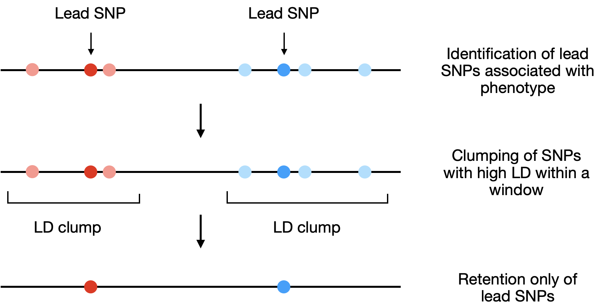
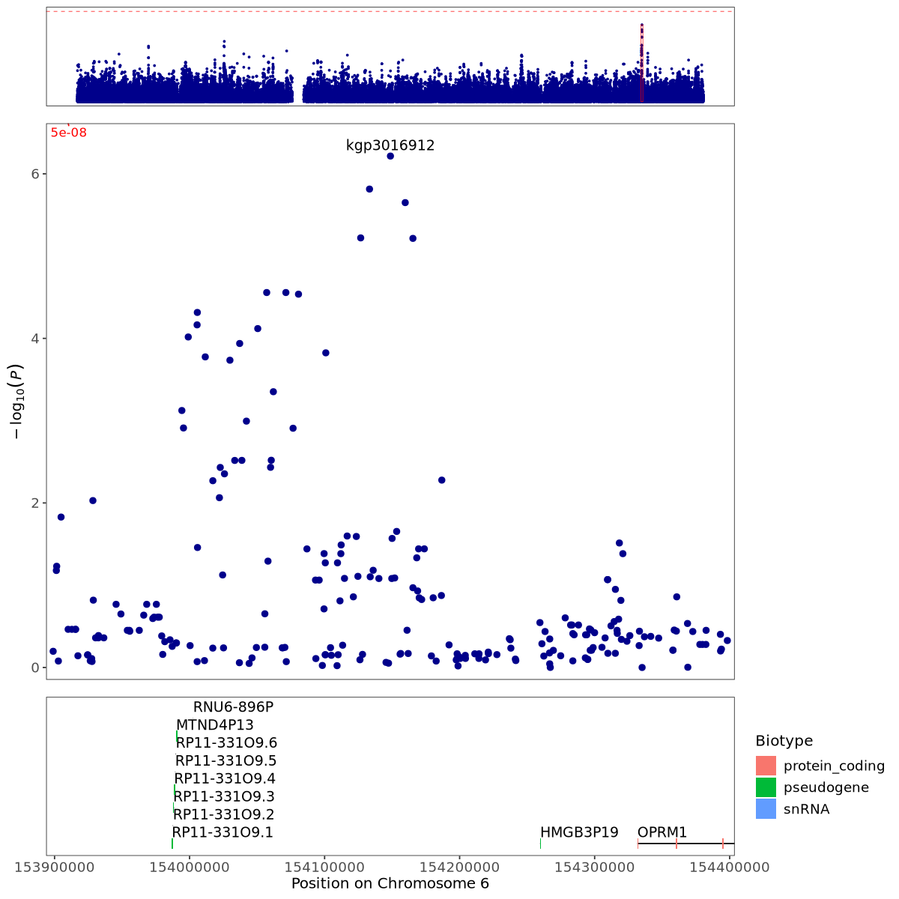
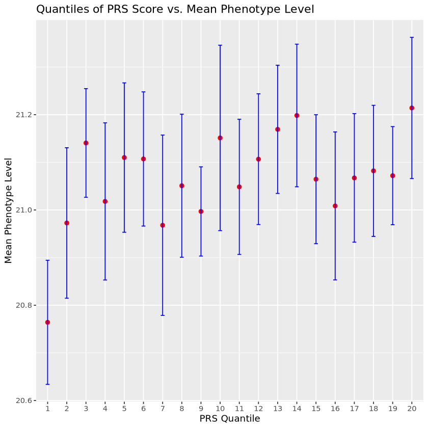
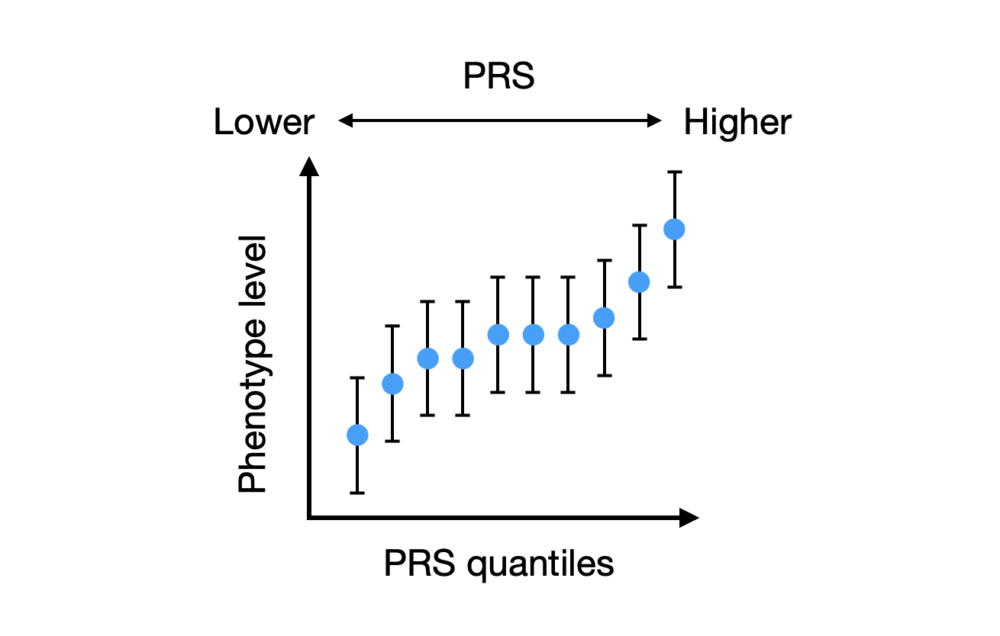

polygenic-score · LD and clumping, the score, the threshold, the quantile plot
Slot 59 polygenic-score, PHM5003 week 6, carrying slot 58's LD-and-clumping material as
its first page. The one thing: a score is a weighted count of a person's effect alleles, its
weights come from a separate study, and how well it predicts is a number that must be read on people
it was not tuned on — and that falls when the target's ancestry differs from the base study's.
The measurement. Every number and every point on this page is computed live by the code copied
verbatim out of _lab/prs-measure.mjs — simulateHaplotypes,
ldMatrix, makeGenotypes, regionTrait, regionScan,
clump, simulateBase, drawTarget, simulateGenome,
score, thresholdCurve, quantileBins, comments and all —
drawn with the seeded makeRng from widgets/core/rng.js. Copied rather
than imported: that module runs its six measurement tables at the top level, so importing it into
a page would execute about half a minute of console.log on load. The script itself is not
touched.
The lesson's own four figures, which the candidates below are measured against. They are the shape the reader has already seen; a widget that draws a fifth shape makes them learn the picture before they can read it.




§0 · The title and the subtitle
The title is the lesson's own name for the method; the slug drops risk because the lesson's
summary is at pains to say the score is relative. Both subtitles rendered in the shell's own
.w-heading at the stage's 550px, with the character count measured against the 140–240
the recent subtitles hold (2.10).
§1 · Page 1: the region, the clumping, and what goes under the association plot
The default region: 100 SNPs at 5 kb spacing (495 kb), 1,000 haplotypes on a four-founder genealogy, recombination 0.005 per kb, 500 people, one hidden causal SNP at β 0.25, seed 1; clumped at PRSice's own defaults, r² 0.1 within 250 kb. A the association plot with the r² triangle under it. B the association plot with 40 haplotypes under it instead. C all three stacked.
§1b · Clumping, drawn as it is
Two stills of the same region: before clumping, every SNP under P < 0.05 in
--c-extreme; after, only the clump leads are full points and everything a clump absorbed
is faded. This is the lesson's own three-row diagram with the y axis it never had.
§2 · Page 2: the score built for one person
Σj βj xij drawn as three strips on one x axis — the person's genotype at each kept SNP, the base study's weight for it, and the sum running along — over the target cohort's whole score distribution with the person's place in it. A that figure, at three thresholds. B the first eight SNPs as a table of genotype × weight = contribution.
§3 · Page 3: R² against the P threshold, with a holdout
The base study is 1,500 people over 1,000 independent SNPs, 300 of them causal at h² 0.30; the target and the holdout are 319 each, the lesson's own n. A the two curves with the kept count on a second axis. B the same plus PRSice's own bar figure of R² at eight thresholds.
§4 · Page 4: the quantile plot, and the target population
Twenty bins of the score, each with its mean trait and a 95% t interval, and the cohort's overall mean as a line. A one panel redrawn under a Target population control. B the matched and the distant target side by side on one stage.
§5 · The run
Page 2's run: the sum growing one SNP at a time. Three stills at the threshold that keeps 38 SNPs — after 3, after 12, and finished. Page 1's run and page 3's are described under the stills; page 4 arrives finished.
§6 · The rail at 300px, one candidate per page
Core's own DOM inside a .w-split, measured after document.fonts.ready;
nothing under widgets/core/ is touched by this page. Each page shows only its own fields,
which is when on the page parameter. The two candidates for the page control and the two
for the P threshold are measured separately below.
§7 · Every reader-facing string
Title, subtitle, gallery blurb, page names, control labels and their detail lines, option
labels, readout labels and notes, canvas captions and notes, and legend entries. A
detail says what the control is and never what will happen to the figure; no line names a
lesson, a cell or a notebook; no line carries a word this collection invented.